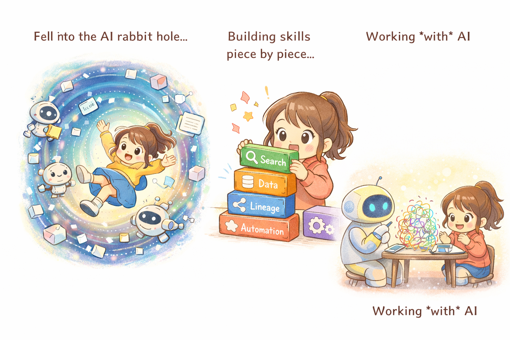

A personal collection of restaurants, cafes, and hidden gems across Sydney — built from real visits, real cravings, and a lot of Google Maps pins.
Explore 108 Places
About Lihan
From hole-in-the-wall ramen spots to Saturday morning bakeries — this is the full list.